We have a lot of new folks here today which is great!
Always looking for hosts and speakers
This is a simple scoped app with a service portal.
This app has "notes" that users can take. We're going to make a nice by showing this list on the service portal, then allowing you to edit the notes on the service portal.
https://developer.servicenow.com
Take a look at the custom Notes application that comes with your instance and create some demo data.
Create a custom widget that displays the list of notes you created in Lab 0. You will also broadcast the sys_id of the selected note when clicked.
Save the widget with this code, check the page /notes
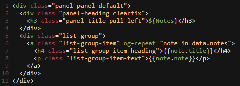This allows your html to call the function in the client script.
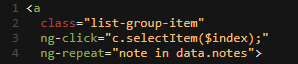Edit List widget (client)
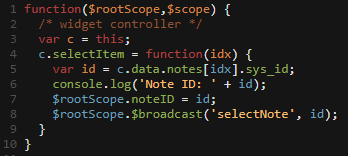click on the notes a few times
note the "Note ID: SYS_ID"
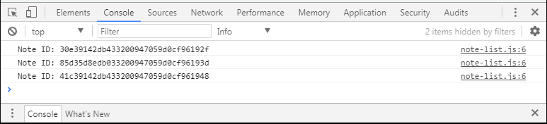Configure the widget that shows the content of the selected note.
Save the widget. On your portal view the console as you click. You should see "Listener caught NoteID: .."
Change the function in the client script to match the below. This will use c.server.get() to send an object containing our action and noteID to the server where we’ll use it to grab the note fields using GlideRecord.
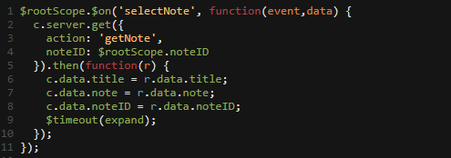Now we’ll use the data passed to us in the form of the input object to get the GlideRecord data from the server by using the following Server Script code.
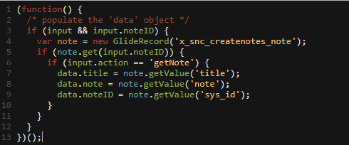And lastly, we need somewhere to show that data in the widget, so we’ll populate a panel through adding the following to the HTML Template.
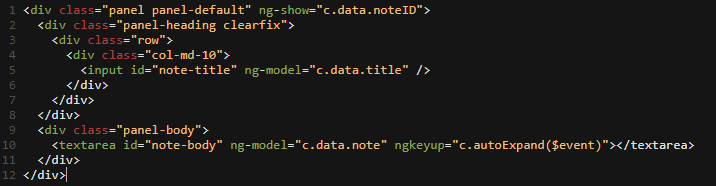Save the Widget
When you click a note, it loads on the right.
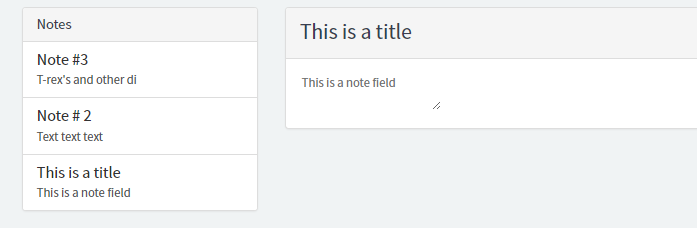Configure the widget that shows the content of the selected note to allow you to update the note. For this application the note will automatically update as you type
The first thing we need to do is trigger an update from the input and textarea fields by adding the highlighted attributes to those elements.
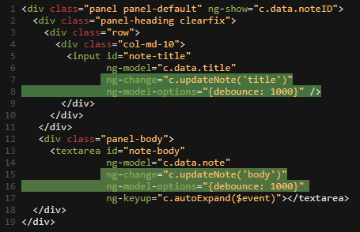Now that the input and textarea elements will trigger something when they change, we need to add a client side function that will run when triggered by the field changes. Add the following function to the Client Script field after line 13.
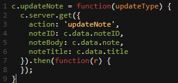Now we need to update the Server Script so notes changes get written to the server. Add the highlighted section to the Server Script.
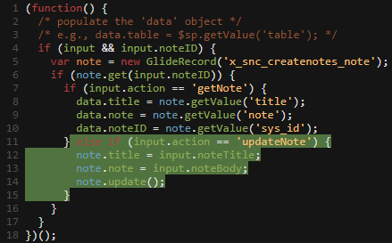Save the widget
Test by going back to your portal tab and refreshing the page. Click on a note, change the title, wait a couple of seconds, and then refresh the page and see if the title in the list has changed.
Edit both widgets so that when you change the title in the note body widget, the new title gets pushed into the note list widget without a refresh.
After the note is updated, we’ll want to return the title back from the server to the client, so add the highlighted portion of the following script to the Server Script field.
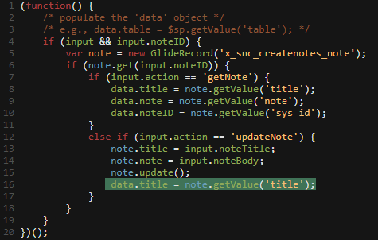Now we need to take that value and broadcast it to the other widget. Add the highlighted portion to the c.updateNote() function in the Client Script field.
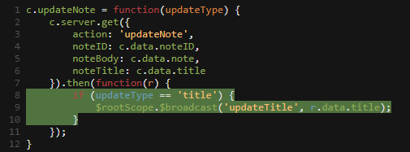Now we need to listen for the broadcasted updateTitle event and update the title on the page by adding the following.
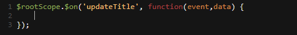You’ll notice that our event listener isn’t actually doing anything here. Our problem is that we don’t have anything that tells us which note to update. In order to fix that, we’re going to populate a variable with the position in the notes array of the note that was clicked. Add the highlighted portions to the Client Script field.
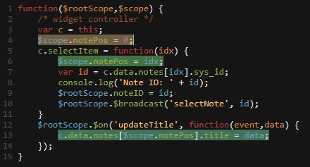Test by going back to your portal tab and refreshing the page. Click on a note, change the title, wait a couple of seconds, and then refresh the page and see if the title in the list has changed.
Edit both widgets so that when you change the title in the note body widget, the new title gets pushed into the note list widget without a refresh.
All we need to do to add a filter is add an input box and reference it in the ngRepeat. Add the highlighted portions to the HTML Template field.
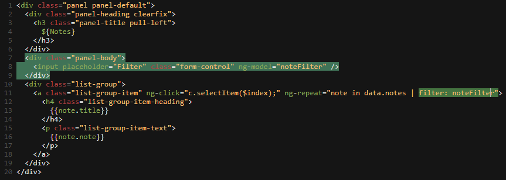Save the widget
You should be able to filter the notes by typing in the Filter field.
So far we’ve added the ability to load your list of notes from the database and edit those notes, but what if you want to add a new note. Add a button that allows you to create a new note from our app.
We need to add a button to the UI to trigger the new note creation. We’ll add a button with a glyphicon to the HTML. Add the highlighted text to the panel-header part of the HTML Template
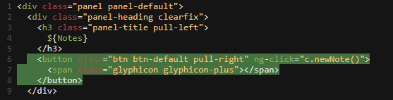Now we want to add a bit of styling to the title to make everything look a little better. Check the checkbox next to the CSS – SCSS option to add a fourth column to the widget editor.
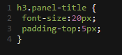In the Client Script portion of the widget editor add the following function, but before the closing curly brace. This is going to call the server side code, tell it we’re creating a new note and then get back information about the new note
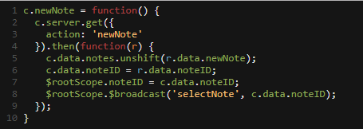Now we need to add some code to the server side script to create a new note. Add the following code before the closing curly brace in the Server Script field. This will create the new note and return the title, note, and sys_id to the client.
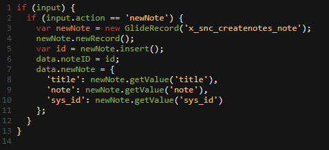Go back to the CreateNotes portal, refresh the page, and click the New button. You should see a new note show up in the list and be available to edit on the right.
Add a button to the note editor that triggers a delete of the note record.
First we need to add a delete button. Add the highlighted lines to the HTML Template field.
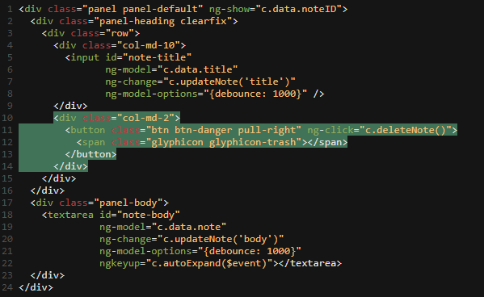Now we need to create the client side function that gets triggered by the new button added in the last step. Paste the following before the c.autoExpand function.
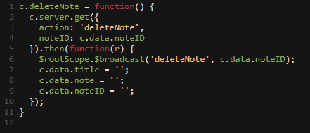Now we need to add a few lines to the Server Script field that will delete the record on the server side. We already have the GlideRecord call setup, so we just need to add the highlighted text.
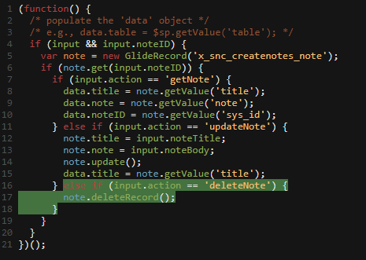The note is already being removed from the DB, but now we need to remove it from the Note list widget. Add the following code before the last curly brace.
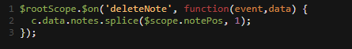Click on a note and click on the delete button. It should disappear from the screen and from the list.
Now time for Demos, then Open discussion/happy hour